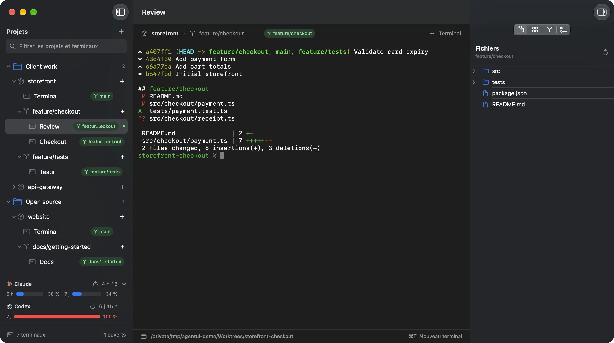
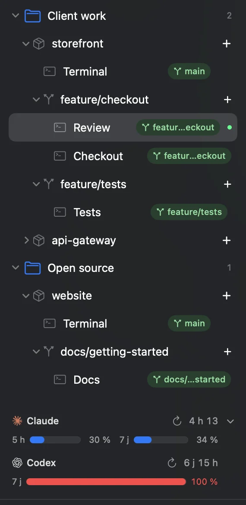
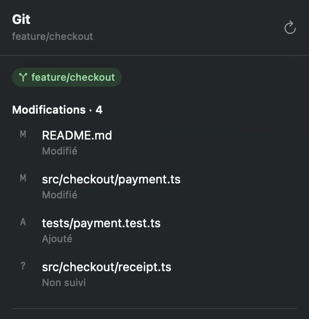

All your coding agents. One native window.
Heka keeps your projects, Git worktrees and agent terminals organized in one fast, native macOS app. Claude, Codex, Copilot, OpenCode: bring the ones you use.

Made for working on many branches at once.

Every branch in its own worktree
Group repositories into folders without moving files. Each branch gets a worktree and its own terminals, and your Claude and Codex limits stay in sight.

Know what each agent changed
The inspector follows the terminal you select: its files, Git changes and diffs, pull request and checks.
Real app, sample projects.
Say the word.
Every Heka terminal comes with the heka command. One line from an agent opens a terminal beside it for a review, or starts another agent on its own branch and worktree. It can then send that agent a message, wait for it and read its reply, while you watch each one appear in the sidebar.
Heka is named after the Egyptian god of magic, whose spoken word brought things into being. Here, the word is a command.
# Another agent, on its own branch
heka worktree create --branch feature/tests -- codex "Add the tests"
# A second opinion, in the same worktree
heka terminal create --name Review -- claude "Review the changes"
# Wait for it, then read its answer
heka terminal wait --terminal "$REVIEW"
heka terminal read --terminal "$REVIEW" --replyInstall in a minute.
-
Download
Heka.zip, one app for Apple silicon and Intel Macs.
-
Move to Applications
Unzip it and drag Heka.app into Applications. macOS 14 or later.
-
Open it
Signed and notarized by Apple. Add your first project with the + above the list.
Heka runs the agents you already have: install Claude Code, Codex, Copilot or OpenCode on your Mac. For pull requests and checks in the inspector, install gh and run gh auth login, or glab and glab auth login for GitLab.